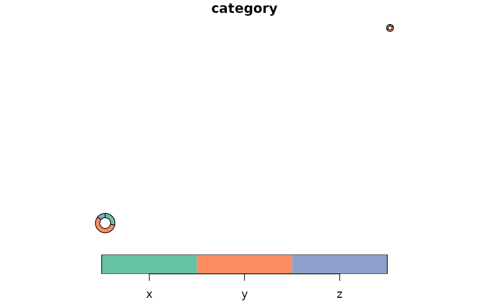

donut_polygons() turns tidy category values at spatial locations into an
sf polygon layer. Each row of data represents one category for one
location.
Usage
donut_polygons(
data,
id,
category,
value,
lon = NULL,
lat = NULL,
input_crs = 4326,
crs = NULL,
map = NULL,
radius_range = NULL,
inner_radius = 0.55,
n = 96,
start_angle = pi/2
)Arguments
- data
A data frame or
sfobject. Ifdatais not ansfobject,lonandlatmust be supplied.- id
Unquoted column identifying each donut location.
- category
Unquoted column identifying donut categories.
- value
Unquoted numeric column giving non-negative category values.
- lon, lat
Unquoted longitude and latitude columns. Required when
datais not ansfobject.- input_crs
Coordinate reference system for
lonandlat, or for ansfobject with missing CRS. Defaults to EPSG:4326.- crs
Target projected CRS used to build the donut polygons. If
NULL, a projected CRS is chosen frommap,data, or an estimated UTM zone.- map
Optional
sfobject used only to choose the working CRS and default donut radius range.- radius_range
Numeric vector of length 2 giving minimum and maximum donut radii in map units. If
NULL, a range is derived from the map extent.- inner_radius
Numeric value in
(0, 1)giving the inner radius as a proportion of the outer radius.- n
Number of points used to approximate a complete outer circle.
- start_angle
Start angle in radians. The default starts at 12 o'clock.
Examples
demo <- data.frame(
place = rep(c("A", "B"), each = 3),
lon = rep(c(-71.3, -71.1), each = 3),
lat = rep(c(46.75, 46.85), each = 3),
category = rep(c("x", "y", "z"), times = 2),
value = c(10, 20, 5, 5, 15, 10)
)
donuts <- donut_polygons(demo, place, category, value, lon = lon, lat = lat)
plot(donuts["category"])
